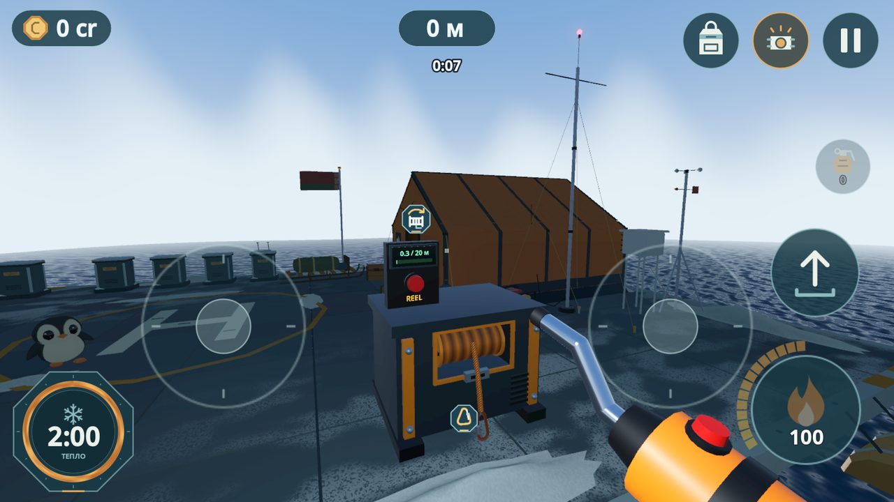
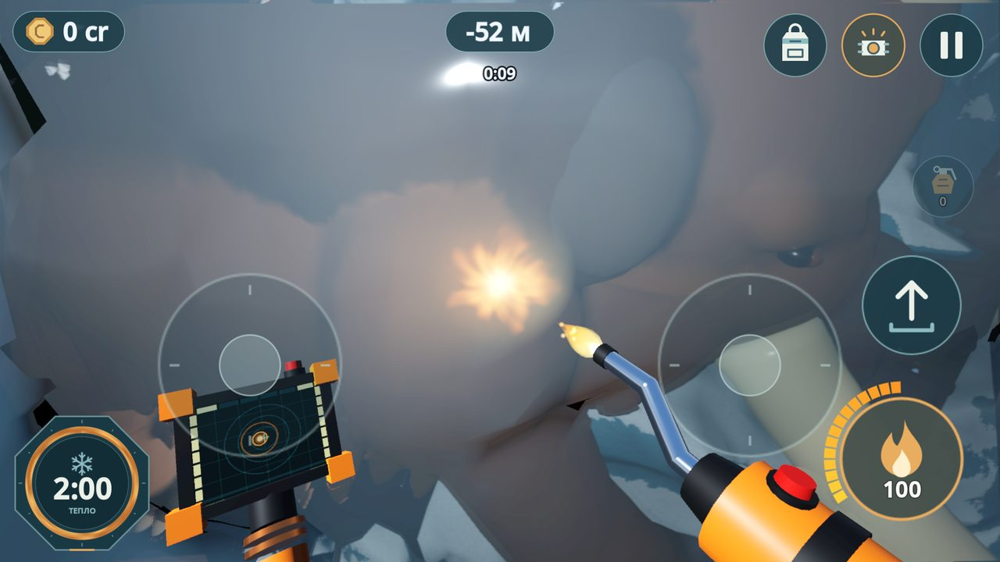
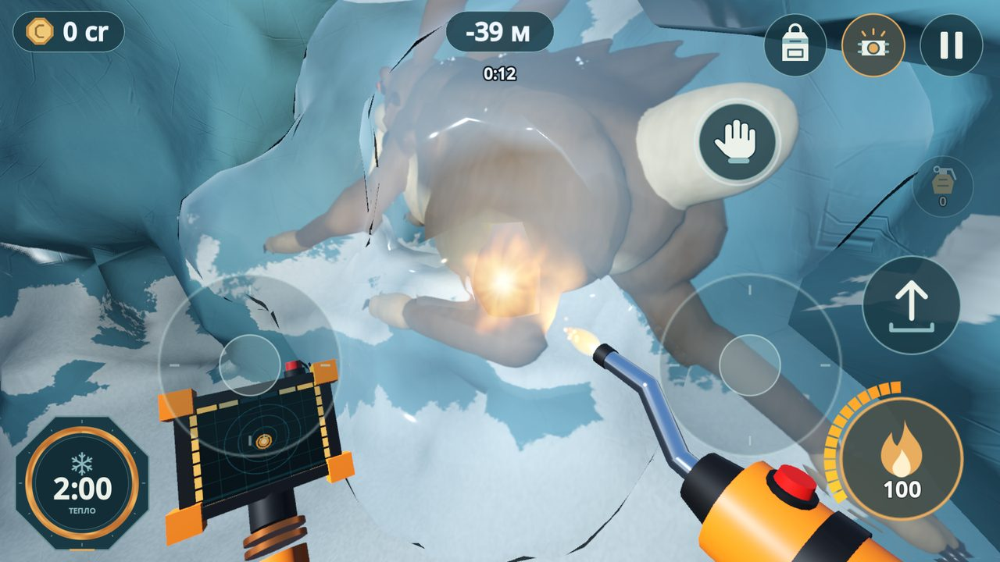
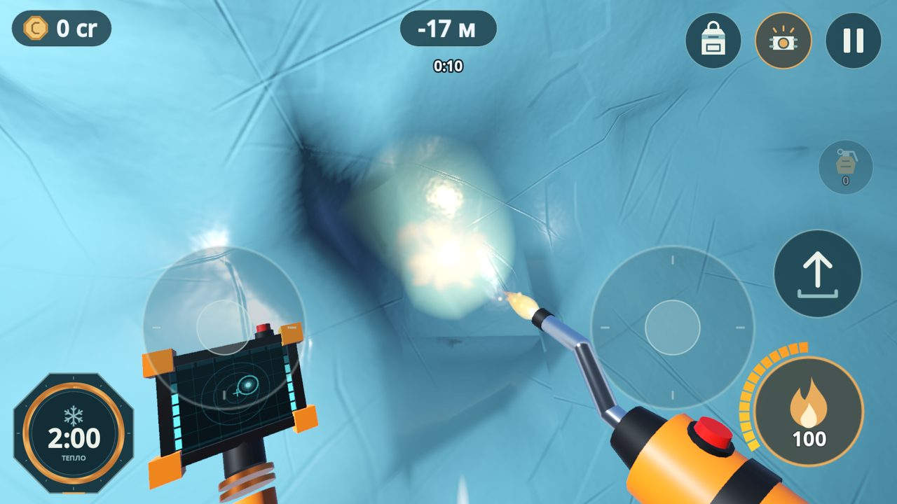
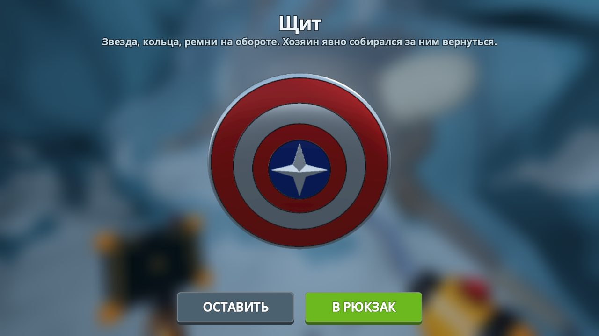
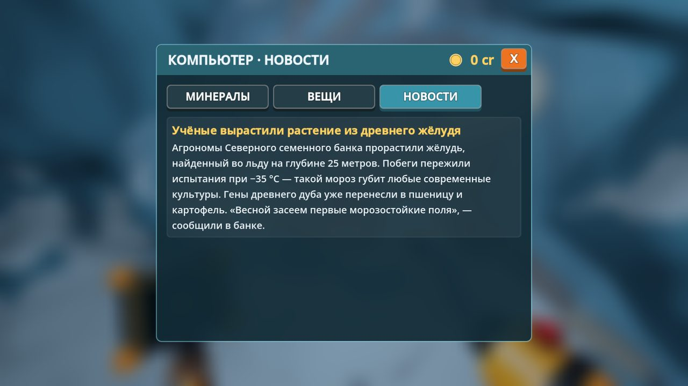

Русский · English
Растопите айсберг горелкой и узнайте, что вмёрзло в него тысячи лет назад.
Планета замерзает. Пятый год подряд температура падает, ледники подходят к городам, и учёные надеются найти ответ в древних льдах. Вертолёт высаживает вас на платформу у огромного айсберга — с палаткой, обогревателем, рацией и газовой горелкой. Дальше — вниз, в лёд.




Растапливайте лёд
Горелка режет лёд там, куда вы её направите: прокладывайте ходы, спускайтесь в пещеры, вытапливайте находки. Глубже — темнее: берите налобный фонарь и крутите динамо, когда он садится.
Собирайте минералы
Аквамарин, пирит, магнетит, гранат, циркон, золото, уран и метеоритное железо — чем глубже, тем дороже. Продавайте их и улучшайте снаряжение.
Следите за холодом
Пока вы во льду, тепло уходит. Пробьёте стенку ниже уровня моря — ледяная вода хлынет в пещеру. А иногда с моря приходит метель.
Решите, чем всё кончится
Каждая находка меняет судьбу человечества — к лучшему или к худшему. Несколько финалов: выживут ли люди, и выживете ли вы сами.
Поддержка
Вопросы и ошибки: jeux.developpeur@gmail.com
Политика конфиденциальности
What’s in the Iceberg?
Русский · English
Melt an iceberg with a torch and find what froze inside it ages ago.
The planet is freezing. For the fifth year running the temperature keeps falling, glaciers creep towards the cities, and scientists hope the answer lies in ancient ice. A helicopter drops you on a platform beside a huge iceberg — with a tent, a heater, a radio and a gas torch. From here on, it is down into the ice.


- Melt the ice freely: every cave is yours to dig
- 8 kinds of minerals and 8 finds with a story
- Cold, water, blizzards, grenades, a winch rope and a dynamo headlamp
- News from the mainland about every find you hand over
- Several endings
Support
Questions and bug reports: jeux.developpeur@gmail.com
Privacy policy